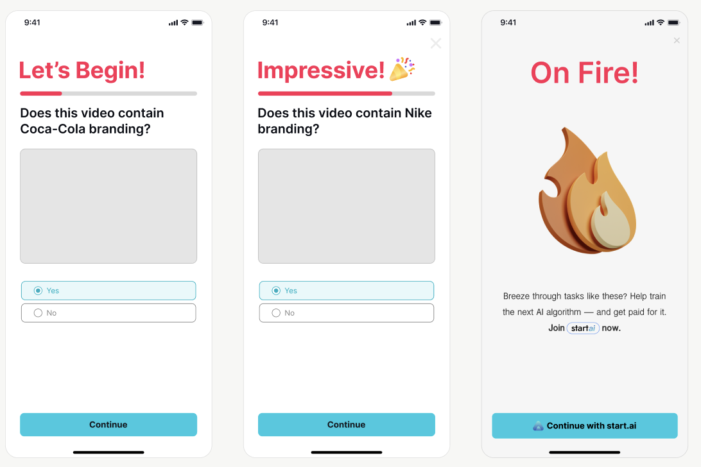
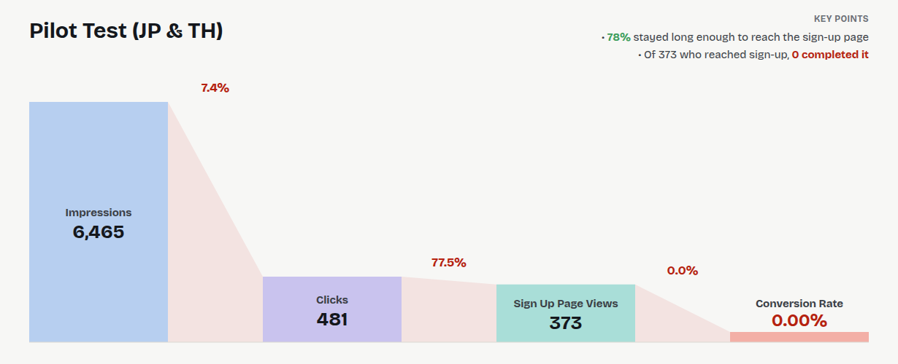
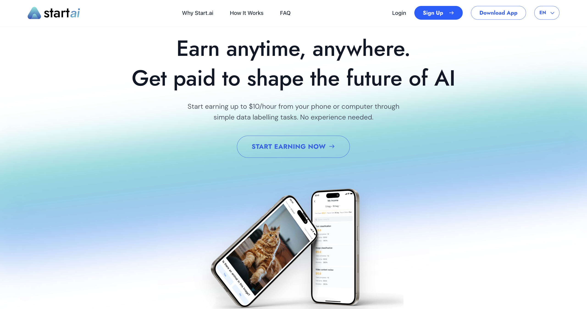
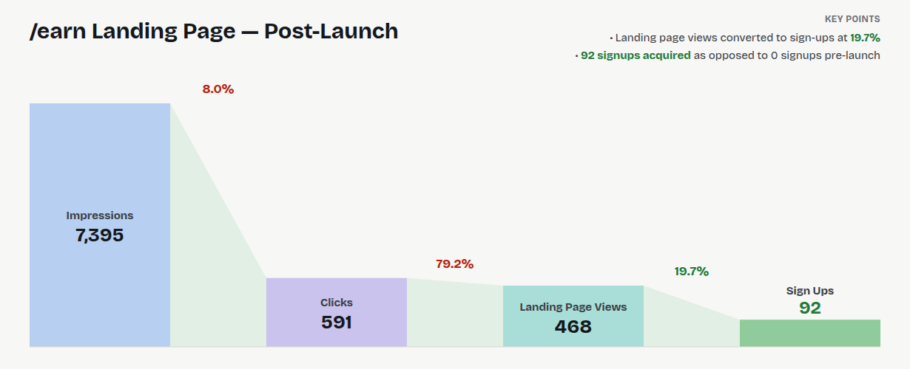
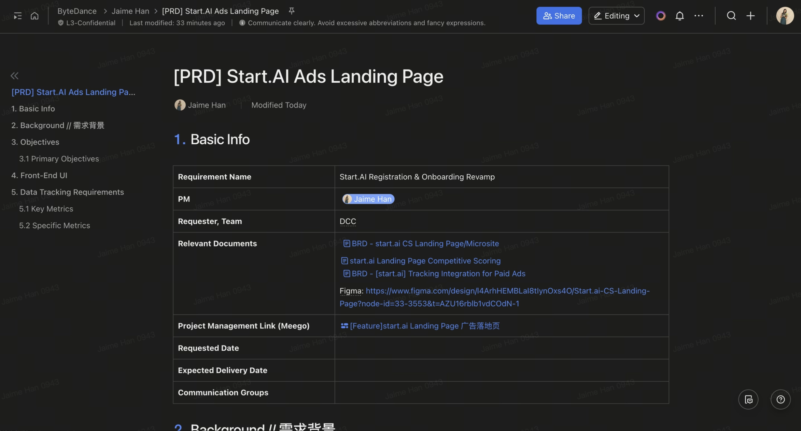
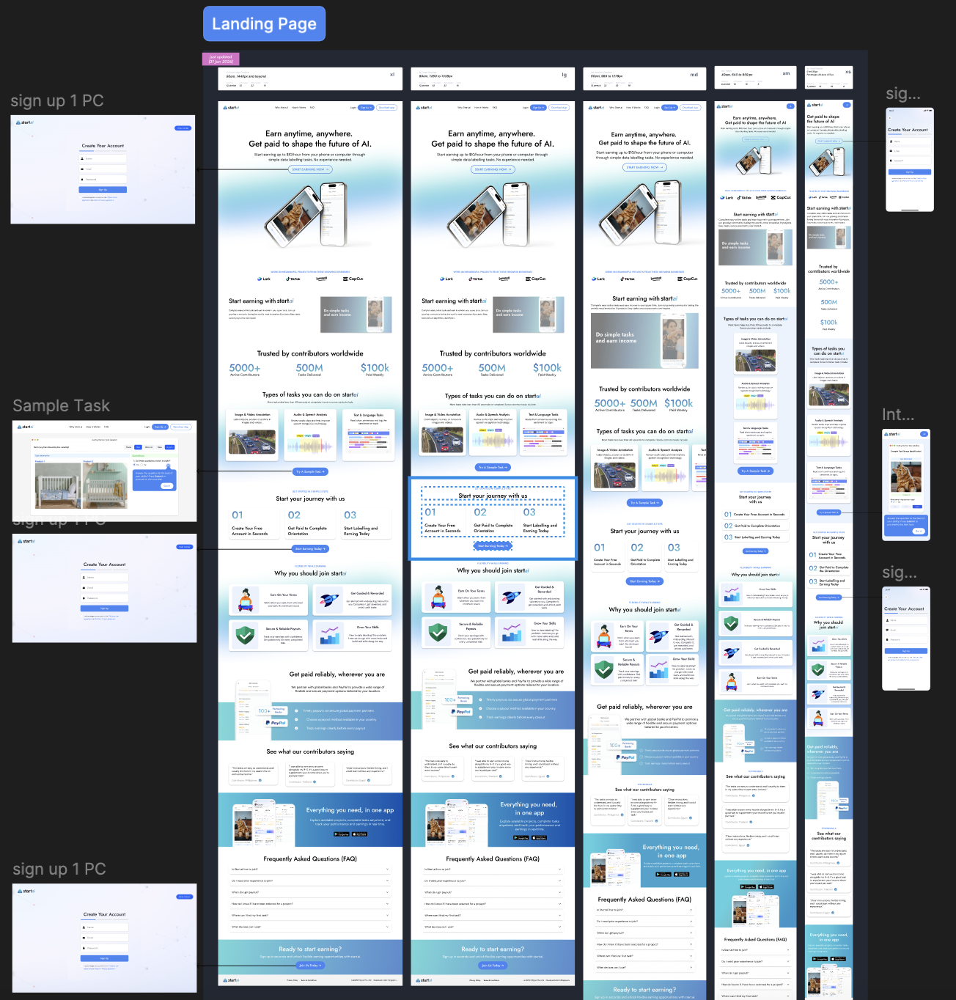
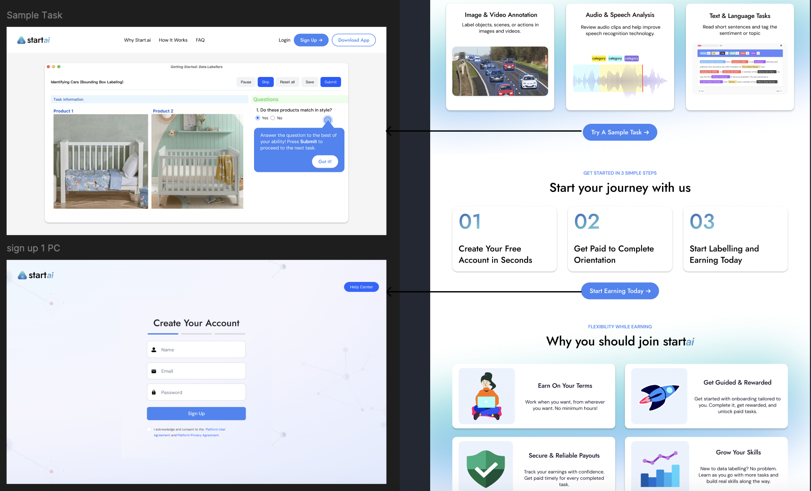

Improving the Start.ai Conversion Funnel
Context Summary
Start AI is a platform that trains AI through crowdsourced efforts, and is fully accessible by members of the public. Participants can earn income via doing simple AI labelling tasks which help to feed databases that eventually train the AI algorithms for other ByteDance Products. Some examples include image identification, audio & speech analysis and more.
Our team set out to attain more users for the app to have sufficient crowdsourced data labellers to meet data labelling needs of AI algorithm training for various different projects. The images on the right show an example of the interactive paid ads that were deployed in other apps (e.g capcut) with a CTA button at the end.

Overall Project Benefit Metrics
In summary, after implementing the streamlined registration & onboarding process, our team saw significant increases in click-through rate, registration completion, and onboarding completion as seen below.
1. The Problem
A previous Pilot Campaign on Start.ai paid acquisition ads in Japan and Thailand market revealed significantly low conversion rate (CVR) and cost per acquisition (CPA). Noticeably, there is a high drop-off rate in the conversion funnel from sign-up page to sign-up completion.
Most significantly, it showed that of of those that interacted with the paid ads, 78% stayed on as it brough them to the sign-up page. However from that pool, 0% of them completed sign up for the app.
This indicates that there is a strong barrier to completion for viewers upon landing on the sign-up page.

2. The Product Solution
To address this, we conducted user research surveys and in-person interviews, finding out that the high drop-off rate was due to lack of trust, credibility and understanding of what the app is.
As such, our solution was to increase conversion rate by creating a consumer-facing landing page that builds trust with viewers by positioning start.ai as a credible labelling platform, highlighting monetary earning potential for users, and mitigating common user doubts and concerns.

3. The results
After deployment of the start.ai landing page, the conversion rate increased from 0% → 19.7%, with 92 successful signups as opposed to 0 signups previously.

4. My Role
As product owner, I was responsible for the full lifecycle — from analysing the onboarding funnel and narrowing in on the drop-off in the data, to designing the detailed user journeys and interfaces, to A/B Testing, and tracking metrics. I ran the QA myself and tracked the funnel post-launch to confirm the redesign actually moved the numbers.
Details of Work
I developed a thorough detailed Product Requirement Document (PRD), specific UI requirements and data tracking requirements, communicating directly with developers based in china and US on a daily basis.

Responsive User Interface Design
As the lead UI/UX designer in my leanly-designed team, I designed the entire page in detail, explaining to developers as well on the specifics of each button and function.

